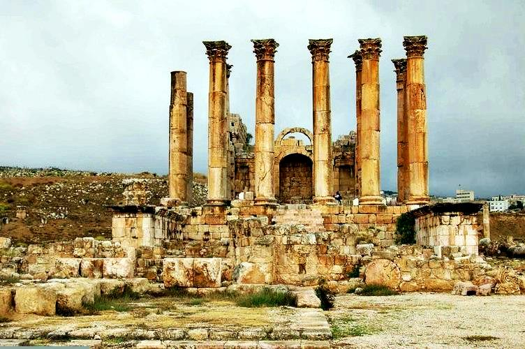

İnsanoğlu çağlar boyunca, uzun süre kendinden söz ettirecek, geleceğin hayran kalacağı ve hatta tarih kitaplarında yerini alabilecek eserler vermeye çalışmıştır. Bu nedenle de daha iyisini, daha güzelini yapabilme arzusu insanoğlunun her çağda içinde taşıdığı bir duygudur.
Uzun yıllardır başta tarihçiler olmak üzere bir çok yazar, araştırmacı ve sanatkarlar “Dünyanın en güzel yapıtı hangisidir ?” sorusuna cevap aramıştır. Dünyanın 7 harikası kavramı ise ilk kez M.Ö 5. yüzyılda tarihçi Heredot tarafından ortaya atılmış ancak gerçekleştirilememiştir. 300 yıl sonra yani M.Ö 2. yüzyılda Sidon’lu Antipatros “Dünyanın Yedi Harikası Üzerine” adlı eserle yedi harikayı sıralamıştır ve bu liste günümüzde de “Dünyanın Yedi Harikası” olarak kabul edilmektedir.
Keops Piramidi
İnsanoğlu çağlar boyunca, uzun süre kendinden söz ettirecek, geleceğin hayran kalacağı ve hatta tarih kitaplarında yerini alabilecek eserler vermeye çalışmıştır. Bu nedenle de daha iyisini, daha güzelini yapabilme arzusu insanoğlunun her çağda içinde taşıdığı bir duygudur.
Artemis Tapınağı
Lidya kralı Croseus tarafından M.Ö. 550'de tanrıça Artemis adına, yunan mimar Chersiphron tarafından tasarlanmış ve dönemin en ünlü heykeltraşlarına yaptırılmıştır. Tamamen mermerden yapılmış olan bu yapı bronz heykellerle süslenmiştir.